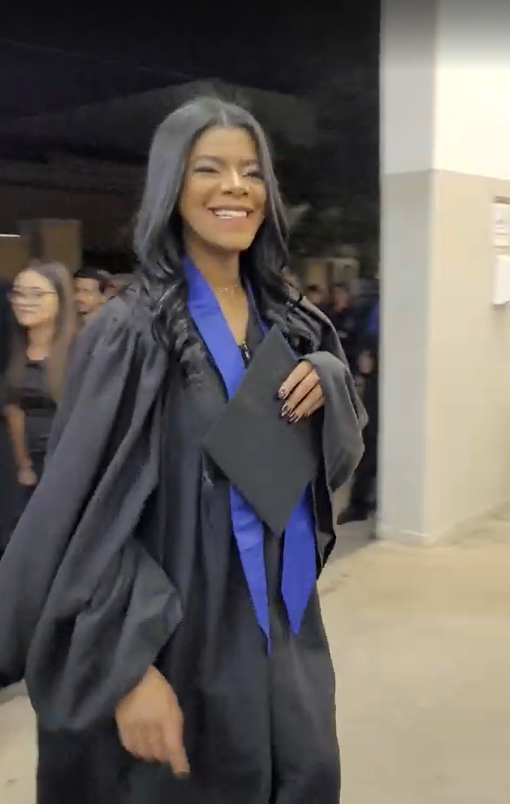
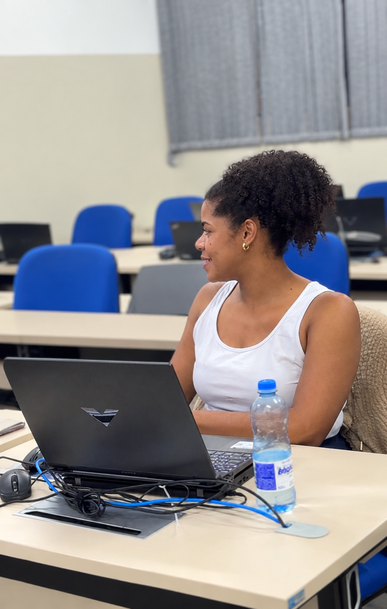
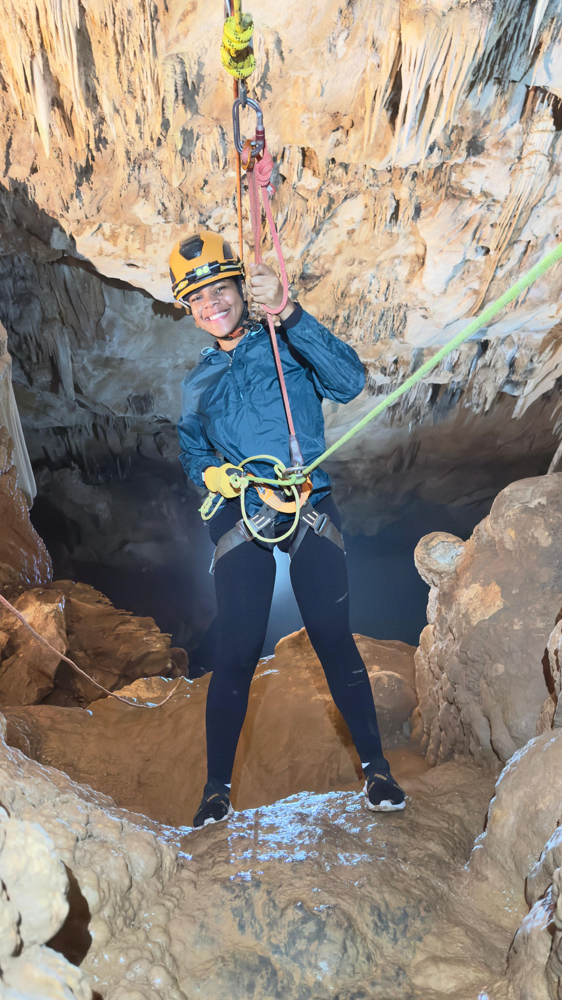
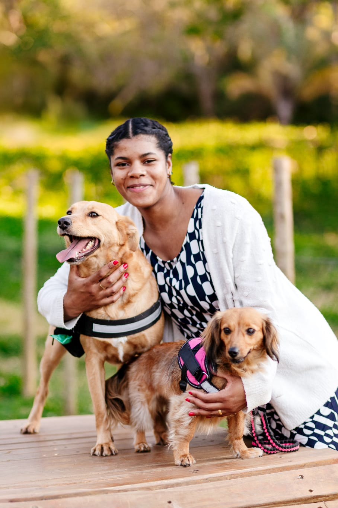
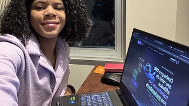

Oi! Eu sou a Isa!
seja bem-vindo(a) ao meu universo!
aqui compartilho um pouco de quem sou, meus projetos, conquistas e tudo que me inspira a criar e evoluir.
Formação e Carreira
Sou uma profissional formada em Gestão Comercial, com uma trajetória marcada pelo aprendizado contínuo, pela busca por novos conhecimentos e pelo desenvolvimento profissional, por meio de cursos, certificações e experiências que contribuem para meu crescimento.

Tecnologia
Atualmente, sou estudante da área de Tecnologia da Informação na Faculdade de Tecnologia de São Roque (FATEC), com grande interesse em Design, inovação e tecnologia.

Ação social
Participei do projeto de extensão Natal que Conecta, contribuindo com uma ação solidária que promoveu empatia, união e integração com a comunidade. Uma experiência de aprendizado e crescimento pessoal.

Esportes e Aventuras
Encontro no esporte uma forma de fortalecer não só o corpo, mas também a mente, a disciplina e a determinação. Superar meus próprios limites também faz parte de quem sou.

Universo Castro - Pet
Atualmente, uno minha paixão por animais ao empreendedorismo digital, administrando um grupo de promoções do mercado pet. Uma experiência desafiadora e de muito aprendizado.

Universo Castro
Junto com meu marido, estamos desenvolvendo o Universo dos Afiliados, um site voltado ao mercado de afiliados. Um projeto que representa nossa busca por inovação e crescimento no mundo digital.

dentro de mim mora um universo